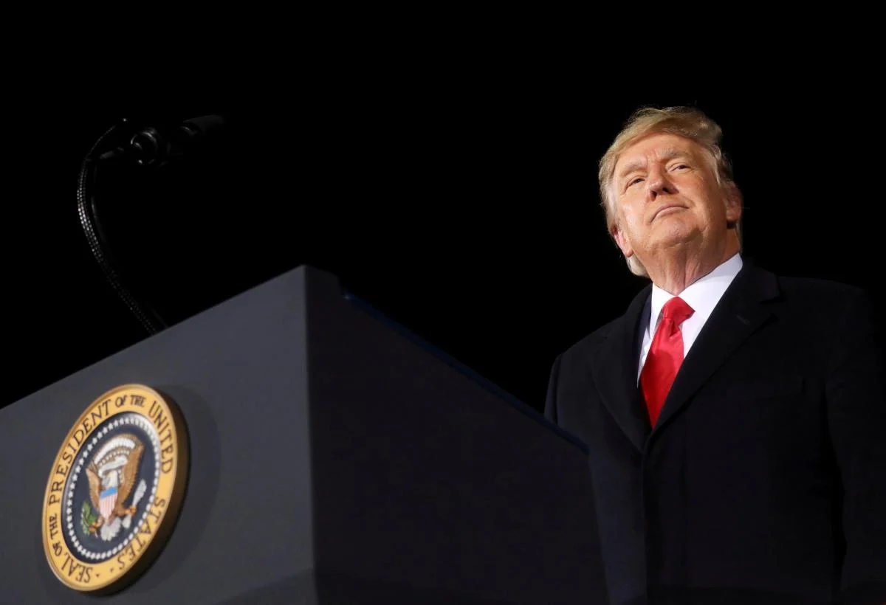

Європу лякає Трамп: фондовому ринку прогнозують падіння
У разі перемоги Дональда Трампа на цьогорічних президентських виборах може суттєво постраждати фондовий індекс DAX, який відображає стан економіки Німеччини.
У разі перемоги Дональда Трампа на цьогорічних президентських виборах може суттєво постраждати фондовий індекс DAX, який відображає стан економіки Німеччини.
Посол Угорщини в Білорусі Зіта Ілона Бенчик вручила вірчі грамоти Олександру Лукашенку.
Електромобілі довго не могли завоювати популярність, але тепер вони дійсно прийшли. Нині на вибір представлено ширший асортимент, ніж будь-коли, що сприяє зниженню цін, а досконаліші акумуляторні технології дають змогу подорожувати далі на одній зарядці. Як інформують Економічні новини, про це пише Autocar.
Колишній голова Служби зовнішньої розвідки Віктор Гвоздь загинув у Єгипті. Дзвінок між Байденом і Зеленським може відбутися перед самітом із Путіним. Бойовики на Донбасі поранили українського військового. Білорусь може зупинити постачання бензину А-95 в Україну. 16-річна дівчинка втекла з окупованої Горлівки. Такими були головні новини 28 травня.
З 10 по 28 січня в шести містах Німеччини проходить чемпіонат Європи з гандболу серед чоловіків 2024 року. Olympics розповідає про підсумки матчів, які відбулися в межах основного раунду, і про команди, які зіграють у півфіналі.